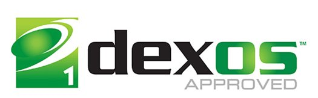
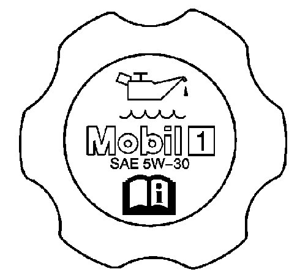
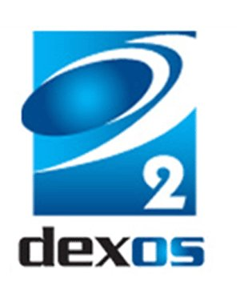

Engine - GM Dexos 1(R) And 2(R) Oil Specifications
INFORMATIONBulletin No.: 11-00-90-001A
Date: December 20, 2012
Subject: Global Information for GM dexos 1(TM) and dexos 2(TM) Engine Oil Specifications, Licensed Brands, and Service Fill
Models:
2013 and Prior GM Passenger Cars and Trucks
Excluding All Vehicles Equipped with Duramax(TM) Diesel Engines
Excluding the Corvette Engines Built at Wixom - RPO LS7 and LS9 for the Z06 and ZR1
Excluding the Corvette Engine Built at Wixom - RPO LS3 for the Grand Sport Coupe with Manual Transmission
Supercede:
This bulletin is being revised to add model year 2013 vehicles, update the Subject text, exclude Corvette engines built at Wixom, Michigan as identified in the Models section and add a section for Corvette Engines Built at Wixom Requiring the Use of Mobil 1(TM) Oil. Please discard Corporate Bulletin Number 11-00-90-001 (Section 00 - General Information).
GM dexos 1(TM) Information Center Website
Refer to the following General Motors website for dexos 1(TM) information about the different licensed brands that are currently available: http://www.gmdexos.com
GM dexos 1(TM) Engine Oil Trademark and Icons

The dexos(TM) specification and trademarks are exclusive to General Motors, LLC.
Only those oils displaying the dexos(TM) trademark and icon on the front label meet the demanding performance requirements and stringent quality standards set forth in the dexos(TM) specification.
Look on the front label for any of the logos shown above to identify an authorized, licensed dexos 1(TM) engine oil.
GM dexos 1(TM) Engine Oil Specification
Important
General Motors dexos 1(TM) engine oil specification replaces the previous General Motors specifications GM6094M, GM4718M and GM-LL-A-025 for most GM gasoline engines. The oil specified for use in GM passenger cars and trucks, PRIOR to the 2011 model year remains acceptable for those previous vehicles. However, dexos 1(TM) is backward compatible and can be used in those older vehicles.
In North America, starting with the 2011 model year, GM introduced dexos 1(TM) certified engine oil as a factory fill and service fill for gasoline engines. The reasons for the new engine oil specification are as follows:
- To meet environmental goals such as increasing fuel efficiency and reducing engine emissions.
- To promote long engine life.
- To minimize the number of engine oil changes in order to help meet the goal of lessening the industry's overall dependence on crude oil.
dexos 1(TM) is a GM-developed engine oil specification that has been designed to provide the following benefits:
- Further improve fuel economy, to meet future corporate average fuel economy (CAFE) requirements and fuel economy retention by allowing the oil to maintain its fuel economy benefits throughout the life of the oil.
- More robust formulations for added engine protection and aeration performance.
- Support the GM Oil Life System, thereby minimizing the replacement of engine oil, before its life has been depleted.
- Reduce the duplication of requirements for a large number of internal GM engine oil specifications.
Corvette Engines Built at Wixom That Require the Use of Mobil 1(TM) Oil

The following Corvette engines built at Wixom, Michigan are equipped with an OEM oil fill cap that identifies Mobil 1(R) SAE 5W-30 as the engine oil that is required to be used in these engines.
- Corvette Engines Built at Wixom - RPO LS7 and LS9 for the Z06 and ZR1
- Corvette Engine Built at Wixom - RPO LS3 for the Grand Sport Coupe with Manual Transmission
International Lubricants Standardization and Approval Committee (ILSAC)
GF-5 Standard
In addition to GM dexos 1(TM) a new International Lubricants Standardization and Approval Committee (ILSAC) standard called GF-5, was introduced in October 2010.
- There will be a corresponding API category, called: SN Resource Conserving. The current GF-4 standard was put in place in 2004 and became obsolete in October 2011. Similar to dexos 1(TM) the GF-5 standard will use a new fuel economy test, Sequence VID, which demands a statistically significant increase in fuel economy versus the Sequence VIB test that was used for GF-4.
- It is expected that all dexos 1(TM) approved oils will be capable of meeting the GF-5 standard. However, not all GF-5 engine oils will be capable of meeting the dexos 1(TM) specification.
- Like dexos(TM) the new ILSAC GF-5 standard will call for more sophisticated additives. The API will begin licensing marketers during October 2010, to produce and distribute GF-5 certified products, which are expected to include SAE 0W-20, 0W-30, 5W-20, 5W-30 and 10W-30 oils.
Corporate Average Fuel Economy (CAFE) Requirements Effect on Fuel Economy
Since CAFE standards were first introduced in 1974, the fuel economy of cars has more than doubled, while the fuel economy of light trucks has increased by more than 50 percent. Proposed CAFE standards call for a continuation of increased fuel economy in new cars and trucks. To meet these future requirements, all aspects of vehicle operation are being looked at more critically than ever before.
New technology being introduced in GM vehicles designed to increase vehicle efficiency and fuel economy include direct injection, cam phasing, turbocharging and active fuel management (AFM). The demands of these new technologies on engine oil also are taken into consideration when determining new oil specifications. AFM for example can help to achieve improved fuel economy. However alternately deactivating and activating the cylinders by not allowing the intake and exhaust valves to open contributes to additional stress on the engine oil.
Another industry trend for meeting tough fuel economy mandates has been a shift toward lower viscosity oils.
dexos 1(TM) will eventually be offered in several viscosity grades in accordance with engine needs: SAE 0W-20, 5W-20, 0W-30 and 5W-30.
Using the right viscosity grade oil is critical for proper engine performance. Always refer to the Maintenance section of a vehicle Owner Manual for the proper viscosity grade for the engine being serviced.
GM Oil Life System in Conjunction With dexos(TM) Supports Extended Oil Change Intervals
To help conserve oil while maintaining engine protection, many GM vehicles are equipped with the GM Oil Life System. This system can provide oil change intervals that exceed the traditional 3,000 mile (4,830 km) recommendation.
The dexos(TM) specification, with its requirements for improved oil robustness, compliments the GM Oil Life System by supporting extended oil change intervals over the lifetime of a vehicle.
If all GM customers with GM Oil Life System equipped vehicles would use the system as intended, GM estimates that more than 100 million gallons of oil could be saved annually.
GM dexos 2(TM) Information Center Website
Refer to the following General Motors website for dexos 2(TM) information about the different licensed brands that are currently available: http://www.gmdexos.com
GM dexos 2(TM) Engine Oil Trademark and Icons

The dexos(TM) specification and trademarks are exclusive to General Motors, LLC.
Only those oils displaying the dexos(TM) trademark and icon on the front label meet the demanding performance requirements and stringent quality standards set forth in the dexos(TM) specification.
Look on the front label for any of the logos shown above to identify an authorized, licensed dexos 2(TM) engine oil.
GM dexos 2(TM) Engine Oil Specification
- dexos 2(TM) is approved and recommended by GM for use in Europe starting in model year 2010 vehicles, regardless of where the vehicle was manufactured.
- dexos 2(TM) is the recommended service fill oil for European gasoline engines.
Important
The Duramax(TM) diesel engine is the exception and requires lubricants meeting specification CJ-4.
- dexos 2(TM) is the recommended service fill oil for European light-duty diesel engines and replaces GM-LL-B-025 and GM-LL-A-025.
- dexos 2(TM) protects diesel engines from harmful soot deposits and is designed with limits on certain chemical components to prolong catalyst life and protect expensive emission reduction systems. It is a robust oil, resisting degradation between oil changes and maintaining optimum performance longer.
The dexos(TM) Specification and Trademarks are Exclusive to General Motors, LLC.
Mobil 1(TM) is a Trademark of Exxon Mobil Corporation

Disclaimer